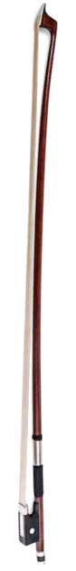
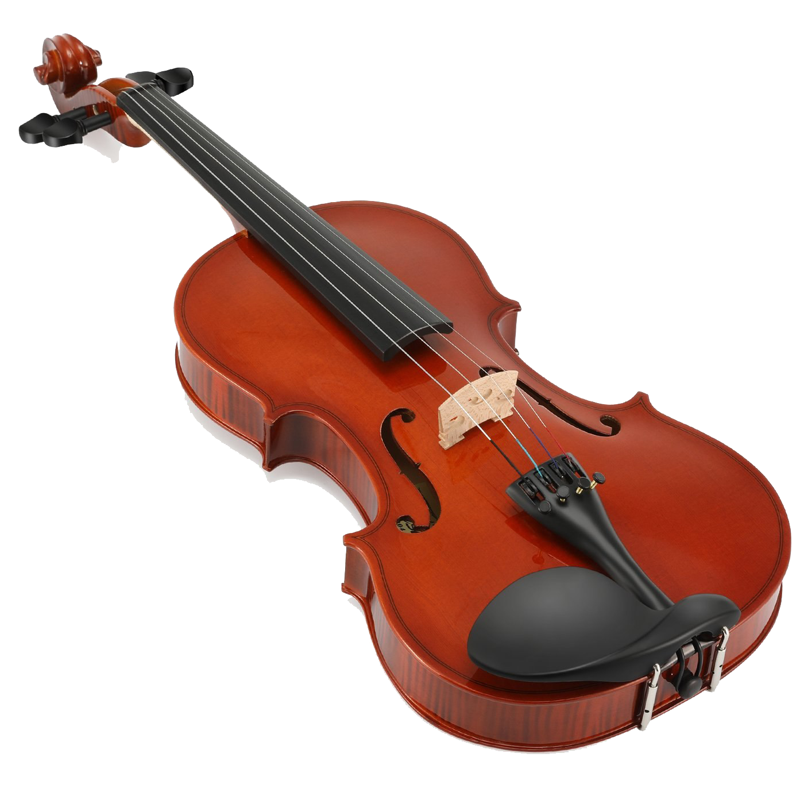
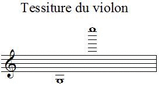
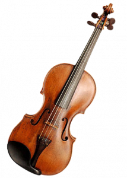
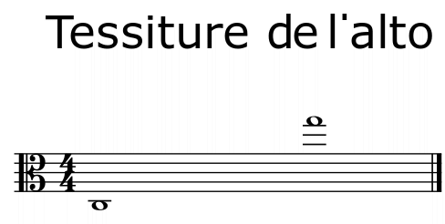
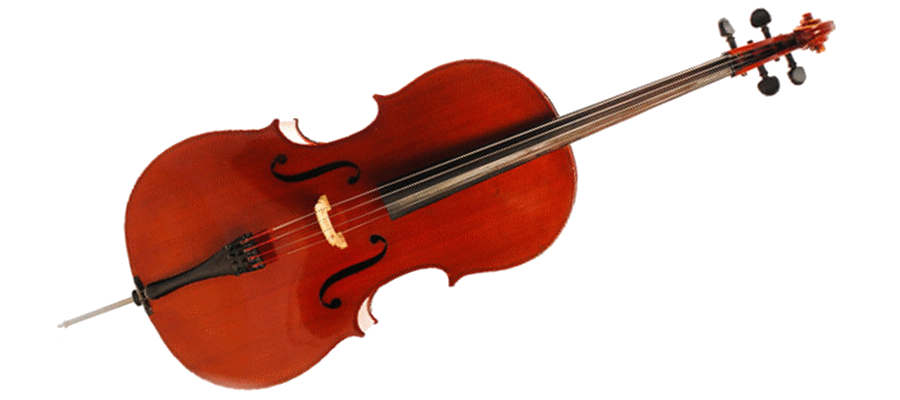
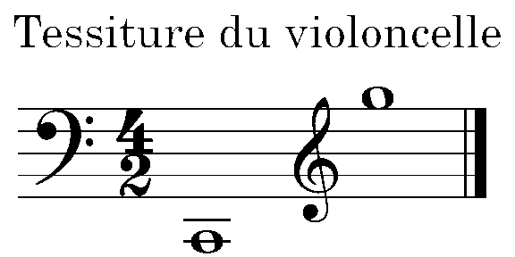
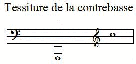

En général
Les instuments à corde frottée sont des instruments en bois qui produisent du son à l'aide d'une corde mise en vibration par un archet. Ils se composent de:
- Un archet
- Quatre cordes
- Un chevalet pour tenir les cordes
- Quatre clés (pour serrer les cordes)
- Une touche (en bois noir)
- Une caisse de résonnance avec:
- Une âme (en bois au milieu)
- La table d'harmonie percée de deux ouïes (trous en S et Z)
Les cordes frottées sont placées à l'avant dans un orchestre symphonique car ce sont les meilleurs instruments et les plus beaux (et cela évite d'entendre les fausses notes des vents).
Quand les cordes ne veulent pas s'encombrer d'autres instrument, ilsLes instruments à corde jouent générallement en quatuor: deux violons, un alto, un violoncelle (et pas de contrebasse, dommage...)
Voici par exemple le quatuor à cordes en ré majeur de Mozart:
Le violon
Le violon est l'instrument à cordes le plus connu. Il a en effet les avantages de produire un son très aigu facilement strident, de tordre les doigts et le cou des violonistes., car c'est celui qui fait le plus de première voix.

Il a les quatres cordes sol, ré, la, mi (du moins aigu au tropplus aigu), et sait lire que la clé de sol. Sa tessiture est moyenne:
A part sa toute petite taille, le violon n'a pas beaucoup d'autres caratéristiques.
L'alto
L'alto est un istrument semblable au violon, plus grand et plus grave.
Ses cordes sont décalées d'une quinte par rapport au violon: do, sol, ré et la, du plus grave au plus aigu.

L'alto est un instrument qui lit en clé d'ut 3 (c'est l'ancien nom de do), c'est à dire que la note sur la troisième ligne à partir du bas est un do. Voici sa tessiture:
{kind=link}
Le violoncelle

Le violoncelle est le meilleur instrument à corde frottée, donc le meilleur instrument qui existeun instrument à corde frottée. Il produit un son doux et agréable, legato ou stacatto, puissant ou discret.
Ses quatre cordes sont do, sol, ré et la, espacées d'une quinte, comme pour l'alto.
Vous pouvez voir ci-contre une vidéo de Gautier Capuçon, célèbre violoncelliste français, interprétant le superbe prélude de la splendide suite n°1 de Jean Sebastien Bach.

Le violoncelle a une tessiture importante: il couvre plus de trois octaves. Il lit des partitions en clé de fa, clé d'ut 4 ((c'est l'ancien nom de do), c'est à dire que la note sur la quatrième ligne à partir du bas est un do) et aussi en clé de sol.
{kind=link}
La contrebasse
{kind=link}
La contrebasse est l'instrument à corde le plus grave (et même un peu trop!). A part sa taille, il se différencie du violoncelle par la forme de sa table d'harmonie: en haut, elle est arrondie sur un violoncelle, tandis qu'elle est en pointe dans une contrebasse.
Ses quatre cordes sont mi, la, ré et sol, de la plus grave à la plus aigue. C'est le seul instrument à cordes frottées espacées d'une quarte (et non d'une quinte), probablement parce que les contrebassistes ont la flemme de démancher tout le temps, ce qui est plus difficile pour les accorder à l'oreille.

Elle a une bonne tessiture:
{kind=link}
Vous remarquez qu'ici il reste de la place car le violoncelle étant un instrument très important, il nécéssite beaucoup de place, contrairement la contrebasse qui, elle, est bien moins célèbre (et il y a une raison). Mais bon, vous voyez qu'avec un peu de bonne volonté, on peut toujours remplir un trou (ou presque!)